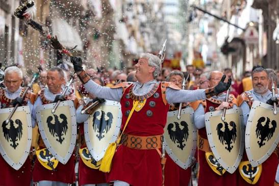
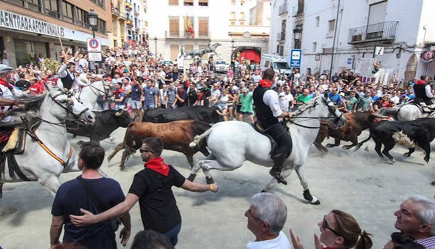

Fira de Tots Sants de Cocentaina
Cocentaina (Alicante · Comunitat Valenciana) · Feria Histórica · "Desde 1346. El mismo privilegio. El mismo balcón."
- La lectura del Privilegi el 1 de noviembre es un acto institucional solemne. El balcón del Palau Comtal y la plaza que lo rodea se llenan de silencio cuando empieza la lectura: el visitante entra en ese registro.
- La zona ganadera y ecuestre es un espacio de trabajo, no un espectáculo. Lo que allí ocurre son compraventas reales entre ganaderos y tratantes, parte de una actividad comercial que lleva siglos celebrándose en Cocentaina.
- La Fira reúne en tres días a mucha más gente que la que vive en Cocentaina. Ese contraste, un pueblo pequeño desbordado por una cita de alcance comarcal, es parte de lo que la hace lo que es: conviven en el mismo espacio quienes vienen a comprar, quienes vienen a vender y quienes vienen solo a mirar.
La esencia de la fiesta
Desde el balcón del Palau Comtal, alguien empieza a leer en voz alta. Abajo, la plaza se ha ido llenando desde primera hora. El humo de las brasas de longaniza llega desde los puestos del Porrat. La dolçaina y el tabal han ido abriendo paso a las autoridades por las calles estrechas del pueblo. Y entonces el lector pronuncia las primeras palabras del documento de Pere el Cerimoniós, el mismo de 1346, y la plaza se queda quieta. Cuatro días así, con medio millón de personas que vienen a comprar, a mirar, a comer y a escuchar cómo un rey medieval les dio permiso para hacer exactamente eso.
¿En qué consiste?
La Fira de Tots Sants es una feria comercial fundada en 1346 por privilegio real. No nació como celebración religiosa ni como recreación histórica: nació como mercado. Un mercado con salvoconducto real: el rey garantizaba la seguridad de quienes viajaran a vender o comprar. Con el tiempo se ha convertido en el certamen al aire libre más grande de la Comunitat Valenciana.
Hoy ocupa unos 140.000 metros cuadrados con más de 750 expositores repartidos en sectores que han ido sumándose a lo largo de los siglos. El recinto moderno concentra los sectores comerciales de siempre: vehículos, maquinaria agrícola e industrial, piscinas de fibra, hogar y alimentación. Es la feria en su versión más contemporánea, con tratos que se cierran igual que en cualquier certamen del país.
Pero la Fira tiene otro flanco. El barrio histórico acoge el mercado medieval, el zoco árabe y la judería: tres espacios diferenciados con artesanos en traje de época, músicos callejeros, herreros trabajando en la calle y oficios que no existen fuera de este contexto. La plaza del Palau Comtal es el escenario de las actuaciones de música medieval e interpretaciones teatrales: la programación varía cada edición, pero el marco siempre es el mismo, con un palacio del siglo XV detrás. El recinto ferial incluye también una zona de atracciones para los más jóvenes. Y aparte de todo eso, la zona de animales: ganado y caballos donde la compraventa se cierra todavía con un apretón de manos, sin papel. En los sectores de vehículos o maquinaria esa formalidad ya no existe.
Es el único certamen comercial de España con la declaración de Fiesta de Interés Turístico Internacional. La distinción llegó en 2019, reconociendo algo que Cocentaina lleva haciendo sin interrupción desde el siglo XIV. La organización corre a cargo del Ayuntamiento de Cocentaina, que publica el programa completo antes de cada edición.
⚠️ Las fechas exactas, el mapa del recinto y la programación cultural los publica el Ayuntamiento de Cocentaina antes de cada edición.
Historia y origen
El 12 de mayo de 1346, Pere IV de Aragón, Pere el Cerimoniós, firmó a petición de su tío Alfons Roger de Llúria, señor feudal de Cocentaina, el privilegio que autorizaba la celebración de una feria anual. El documento fijaba algo práctico además del permiso: el rey garantizaba la protección de los vendedores y compradores en sus viajes hacia la villa. En una época en que los caminos no eran seguros, esa garantía era el argumento de venta de la feria.
Nació como feria ganadera, agrícola y de artesanía (hierro, lana, pan) celebrada originalmente en torno a San Miguel, a finales de septiembre, durante quince días. El cambio de fecha no fue espontáneo: entre 1671 y 1795 el concejo dictó varios decretos intentando desplazarla, vinculados a los ciclos de la cosecha de oliva y almendra, que maduraban a finales de octubre. La insistencia popular la asentó definitivamente alrededor del 1 de noviembre, Día de Todos los Santos, donde lleva desde entonces. En el siglo XIX estuvo a punto de desaparecer: un brote de cólera en 1865 y varias malas cosechas la pusieron contra las cuerdas. Se recuperó.
El mercado medieval del Arrabal, que hoy transforma el barrio histórico en un zoco con artesanos en traje de época, herreros y músicos callejeros, se incorporó en 1996 coincidiendo con el 650 aniversario. No es una tradición secular sino una incorporación moderna que ha funcionado.
Del documento de 1346 no se conserva el pergamino original de la cancillería de Pere el Cerimoniós, sino un traslado notarial coetáneo custodiado en el Archivo Histórico Municipal de Cocentaina. El privilegio era mucho más que un permiso mercantil: mediante la cláusula de la pau de fira (paz de feria o salvoconducto regio), el monarca convertía el término de Cocentaina en territorio inviolable durante quince días, protegiendo a mercaderes y viajeros de embargos por deudas y de la acción de señores feudales vecinos. Solo quedaban fuera del amparo cuatro categorías: traïdors, lladres, assaltadors i falsaris de moneda (traidores, ladrones, salteadores y falsificadores de moneda).
Marco normativo
El reconocimiento oficial de la Fira se acumula en cinco hitos:
- Fiesta de Interés Turístico de la Comunitat Valenciana, otorgada por la Conselleria de Turisme el 9 de octubre de 2007.
- Fiesta de Interés Turístico Nacional por Resolución de 16 de octubre de 2012 de la Secretaría de Estado de Turismo, publicada en el BOE n.º 302, de 15 de diciembre de 2012.
- Bien de Interés Cultural Inmaterial por Decreto 193/2018 del Consell, de 26 de octubre, publicado en el Diari Oficial de la Generalitat Valenciana n.º 8419, de 8 de noviembre de 2018, con traslación estatal en el BOE n.º 22, de 25 de enero de 2019.
- Fiesta de Interés Turístico Internacional por Resolución de 2 de abril de 2019 de la Secretaría de Estado de Turismo, publicada en el BOE n.º 98, de 24 de abril de 2019: la primera feria comercial española en conseguirla.
⚠️ Estas referencias de boletín oficial proceden de la documentación con la que se construyó esta ficha; no las he verificado en fuente primaria desde esta sesión.
Cuándo se celebra
El 1 de noviembre, Día de Todos los Santos, es fecha fija: no cambia de un año para otro. El recinto abre la víspera, el 31 de octubre, y cierra el 2 de noviembre. La edición 2026 se celebra del 31 de octubre al 2 de noviembre, con la lectura del Privilegi desde el balcón del Palau Comtal siempre la mañana del día 1. El programa completo lo publica el Ayuntamiento de Cocentaina en firadecocentaina.org.
📅 Consulta el programa oficial antes de reservar: las fechas exactas y los horarios de cada sector los confirma el Ayuntamiento antes de cada edición.
El programa
- Víspera · 31 de octubre Apertura del recinto ferial. El Porrat de dulces, frutos secos y pequeños regalos ocupa las calles del casco urbano. La zona de atracciones abre ya desde la víspera. Ambiente nocturno en el Arrabal medieval con músicos callejeros y artesanos.
- 1 de noviembre · Día central Por la mañana, la Colla de Dolçaines i Tabals abre paso a las autoridades hasta la plaza del Pla. Desde el balcón del Palau Comtal, lectura íntegra del Privilegi por un ciudadano ilustre elegido para la ocasión. A continuación, apertura oficial de todos los sectores. Zona ecuestre y ganadera en pleno funcionamiento: exhibiciones de doma y compraventa de animales. Durante los días de la Fira, la plaza del Palau Comtal acoge actuaciones de música medieval e interpretaciones teatrales; la programación concreta la publica el Ayuntamiento antes de cada edición.
- 2 de noviembre · Día del cierre Jornada de máxima afluencia en el recinto. Espectáculo de clausura por la tarde. Las dos bandas de música de Cocentaina participan en los actos de cierre.
- 8 de noviembre · Certamen Coral El Certamen Coral Fira de Tots Sants, de ámbito nacional, extiende la agenda cultural de la villa una semana después de la feria principal.
Música y sonido
El sonido que abre la Fira no viene del recinto ferial: viene de las calles del pueblo. La Colla de Dolçaines i Tabals Mal Passet precede a las autoridades el 1 de noviembre por la mañana desde la Plaça del Pla, con el golpe seco del tabal rebotando en las fachadas de piedra, y es quien interpreta junto a metales el himno oficial de la Fira, «Dolça Fira», en la inauguración. Cuando llegan al Palau Comtal y empieza la lectura del Privilegi, la dolçaina para. Lo que queda es la voz del lector y el silencio de la plaza.
El Arrabal y el Zoco Árabe tienen una banda sonora propia, distinta de la del resto de la Fira y que solo suena ahí. En el mercado medieval acompañan a juglares y zancudos instrumentos como la tarota y la chirimía, tambores de marco y panderos; en el Zoco Árabe y la judería, el repertorio cambia a melodías andalusíes y magrebíes con laúd árabe, darbuka, panderos con sonajas y flauta nay. Es música contratada para ambientar esos dos espacios durante los días de Fira, no una tradición local con historia propia, pero forma parte del paisaje sonoro tanto como las bandas o la dolçaina.
Cocentaina tiene dos bandas de música con historia propia: la Unió Musical Contestana, fundada en 1932 con raíces en el siglo XIX, y l'Ateneu Musical de Cocentaina, fundado en 1985. Ambas participan en los actos festivos de la Fira y en el cierre. El Certamen Coral Fira de Tots Sants, creado en 1981 y con más de 45 ediciones, se celebra la semana siguiente en el Centre Cultural El Teular y añade otro registro: polifonía sacra, renacentista y contemporánea de ámbito estatal, el contrapunto culto a la feria comercial. La dolçaina es un instrumento de viento de lengüeta doble, afinado habitualmente en Sol, con una sonoridad penetrante que rebota entre las fachadas del casco histórico; para escucharla en su contexto más concentrado, el momento previo a la lectura del Privilegi es el mejor de la Fira. El tabal que la acompaña es un tambor cilíndrico de madera con doble parche de piel de cabra, tensado con cuerda y correderas de cuero: el golpe seco y continuo marca la cadencia del cortejo institucional por las calles del pueblo.
No te lo puedes perder
La lectura del Privilegi
1 de noviembre · Palau ComtalDesde el balcón del Palau Comtal, un ciudadano ilustre de Cocentaina lee íntegramente el Privilegi original. La plaza del Pla se llena antes de que empiece. Cuando el lector abre el texto, el bullicio de la feria desaparece.
¿Por qué no perdértelo?
El mismo privilegio, el mismo balcón, el mismo pueblo. Todo lo demás de la Fira ocurre también en otras ferias; esto no. Llegar con tiempo para tener sitio en la plaza: una vez que empieza la lectura, el espacio ya no se mueve.
Los tratos orales en la zona ganadera
Durante la Fira · Zona ecuestreEn la zona de ganado y caballos, la compraventa se cierra con un trato oral sin papel. Igual que en el siglo XIV, igual que esta misma mañana si hay un comprador y un vendedor que se ponen de acuerdo.
¿Por qué no perdértelo?
Porque es un sistema de compraventa que sigue funcionando igual que en el siglo XIV. Las exhibiciones de doma son el espectáculo visible, pero los tratos orales son lo que diferencia esta zona de una feria ecuestre moderna.
El mercado del Arrabal
Durante la Fira · Barrio históricoEl barrio histórico se transforma en un zoco con artesanos en traje de época, herreros trabajando en la calle, músicos callejeros y oficios que ya no existen fuera de este contexto. Tres días al año el Arrabal es un zoco en activo.
¿Por qué no perdértelo?
Porque es el contrapunto al recinto ferial moderno. Misma feria, otro ritmo, otro siglo. Pasar de los 750 expositores del recinto ferial a las calles del Arrabal son cinco minutos andando y varios siglos de diferencia en lo que entra por los ojos.
La gastronomía de la Fira
Durante la Fira · Recinto ferialEl recinto ferial tiene su propia zona de restauración con feriantes especializados: carnes a la brasa, arroces, embutidos y frituras. El olor a brasa es uno de los más presentes en los días de la Fira. La pericana, pimiento seco con bacalao y aceite de oliva, es el plato frío de la comarca que aparece en las mesas de la zona cuando hay algo que celebrar.
¿Por qué no perdértelo?
Porque la oferta gastronómica de la Fira refleja la comarca: productos del Comtat y l'Alcoià en un formato de feria al aire libre. Si vas a comer en el recinto, ten en cuenta que los precios son los propios de un evento de esta escala y afluencia.
Consejos prácticos
- Cocentaina tiene conexión por tren en la línea Alcoy–Xàtiva–València. Renfe suele reforzar los servicios durante los días de la Fira. En coche, los accesos al pueblo se saturan: hay parkings disuasorios con autobuses lanzadera gratuitos hasta el recinto.
- El 1 de noviembre es el día de mayor concentración, con la lectura del Privilegi por la mañana. Si el objetivo es recorrer la zona ganadera o el Arrabal con menos gente, la víspera o el día del cierre dan más margen.
- Cocentaina tiene unos 11.000 habitantes. Para los días de la Fira, el alojamiento hay que reservarlo con mucha antelación. Alcoi, a diez minutos en coche, tiene más oferta y buena conexión con la feria.
- El programa detallado, el mapa del recinto y las novedades de cada edición los publica el Ayuntamiento en firadecocentaina.org.
Vocabulario de la Fira
- Privilegi
- El documento original de 1346 por el que Pere el Cerimoniós concedió a Cocentaina el derecho a celebrar la feria. Se lee íntegro desde el balcón del Palau Comtal cada 1 de noviembre. Los locals lo llaman así, en valenciano, independientemente de si hablan en castellano o en valenciano.
- Porrat
- El mercado callejero de dulces, frutos secos y pequeños regalos que ocupa las calles del casco urbano durante la Fira. Denominación tradicional valenciana para este tipo de mercadillo festivo. En Cocentaina el Porrat convive con el recinto ferial moderno y con el mercado medieval del Arrabal. Sus puestos más clásicos: castañas asadas, turrones artesanos, dátiles, panet de figues (pan de higo prensado con almendras) y frutos secos garrapiñados.
- Pericana
- Plato frío típico de las comarcas del Comtat y l'Alcoià: pimiento choricero seco, capellà (bacalao curado en seco) y aceite de oliva virgen extra de la Sierra de Mariola. No es exclusivo de Cocentaina pero sí de esta franja de la provincia de Alicante. En los desayunos de la Fira, el esmorzar de fira, aparece como entrante antes del bocadillo caliente de longaniza o chistorra a la brasa.
- Contestà / Contestano
- El gentilicio de Cocentaina en valenciano es contestà (femenino: contestana). Los contestanos son quienes organizan, participan y viven la Fira de dentro hacia fuera: los que conocen los puestos de siempre, los que saben dónde están los mejores bocadillos, los que han ido cada año desde pequeños.
- Fira de Fires
- Así llaman los locals a la Fira de Tots Sants: la feria de ferias. El nombre refleja que aglutina en el mismo recinto sectores tan distintos como maquinaria agrícola, automóviles, artesanía, gastronomía y ganado, algo que ninguna otra feria de la región hace a esa escala.
- Olleta Contestana
- Guiso tradicional de la comarca, cocinado en cazuela de barro: habichuelas (alubias), pencas de cardo silvestre, arroz, morcilla de cebolla y manitas o careta de cerdo. Se consume para combatir el frío húmedo otoñal de la montaña alicantina. En los días de la Fira aparece en las barras de los bares del casco histórico como plato de cuchareo.
- Herbero de la Sierra de Mariola
- Licor espirituoso con indicación geográfica protegida, obtenido por maceración hidroalcohólica de hierbas silvestres de la comarca: santolina, timó real (tomillo real), cantahueso, poleo y rabo de gato. Se sirve como digestivo en las mesas de la Fira y es uno de los souvenirs gastronómicos más buscados entre los visitantes.
Galería


Enlaces útiles
- Web oficial de la Fira de Tots Sants (programa y recinto)
- Ayuntamiento de Cocentaina
- Turisme Comunitat Valenciana
Última verificación de enlaces: 2026-07-26
Preguntas frecuentes
- ¿Cuándo se celebra la Fira de Tots Sants de Cocentaina?
- La Fira se celebra en torno al 1 de noviembre, Día de Todos los Santos: habitualmente los dos o tres días que rodean esa fecha. Las fechas exactas y el programa completo los publica el Ayuntamiento de Cocentaina en firadecocentaina.org.
- ¿Desde cuándo se celebra la Fira de Tots Sants?
- El origen documentado es el 12 de mayo de 1346, cuando el rey Pere IV de Aragón, Pere el Cerimoniós, concedió a Cocentaina el privilegio para celebrar la feria. La Fira lleva celebrándose sin interrupción documentada desde entonces.
- ¿Qué es la lectura del Privilegi?
- Es el acto que inaugura oficialmente la Fira cada 1 de noviembre. Desde el balcón del Palau Comtal, un ciudadano ilustre de Cocentaina elegido para la ocasión lee íntegramente el documento por el que Pere el Cerimoniós concedió a la villa el derecho a celebrar la feria.
- ¿Se siguen haciendo tratos orales en la Fira de Cocentaina?
- Sí. En la zona ganadera y ecuestre de la Fira, la compraventa de animales se sigue cerrando con un apretón de manos, sin documento escrito. Es uno de los rituales comerciales más antiguos que siguen funcionando en España.
- ¿Qué es la pau de fira o paz de feria?
- Era la cláusula jurídica central del Privilegi de 1346. Mediante ella, Pere el Cerimoniós convertía el término de Cocentaina en territorio inviolable durante los quince días de feria: los mercaderes estaban protegidos de embargos por deudas anteriores y de la intervención de señores feudales vecinos. Solo quedaban excluidos del amparo cuatro categorías: traïdors, lladres, assaltadors i falsaris de moneda (traidores, ladrones, salteadores y falsificadores de moneda). El texto que se lee hoy desde el balcón del Palau Comtal es la transcripción fiel del traslado notarial coetáneo conservado en el Archivo Histórico Municipal de Cocentaina.
La Fira de Tots Sants lleva casi siete siglos siendo lo que fue el primer día: un mercado con salvoconducto real, la pau de fira, donde la gente venía a cerrar tratos sin que nadie les cobrase deudas antiguas ni les parase en los caminos. Eso fue en 1346. Hoy el recinto ferial, el Arrabal medieval, la zona ganadera y la plaza del Palau Comtal son cuatro mundos que coexisten durante tres días sin rozarse demasiado. Lo que los une, cada 1 de noviembre por la mañana, es ese momento de silencio cuando alguien empieza a leer desde el balcón un documento del siglo XIV y la plaza entera decide callarse para escucharlo.
Otras fiestas que te van a interesar

